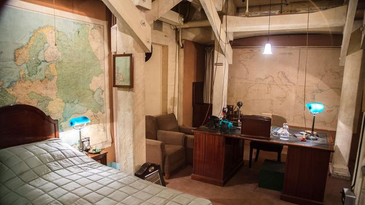

In 2017, newly published Land Registry data revealed 4 million km of networks and telecommunications lines underneath London, many of which were secretly constructed by the Post Office, British Telecom and the Ministry of Defence.
It is an astonishing time capsule down there
These mysterious Cold War-era tunnel systems and underground chambers, which number in the hundreds, have been a source of fascination for decades. Yet, until recently, authorities remained conspicuously secretive about them, many owned by the Ministry of Defence and never publicly acknowledged.
The most intriguing revelation was of the Postmaster General’s secret tunnel beneath the heart of the government at 57 Whitehall. It was built to protect machinery and communications from the threat of atom bombs in the Cold War, and the bunker emerges into the basement of the Old War Office, once used by Winston Churchill. In 2014, the Raffles hotel chain bought the 54,000 sq m Grade II-listed building from the Ministry of Defence for £350 million. Named “The OWO”, the London landmark is set to open as one of the world’s highest-profile hotels in 2022.
The most intriguing revelation was of the Postmaster General’s secret tunnel beneath the heart of the government at 57 Whitehall. It was built to protect machinery and communications from the threat of atom bombs in the Cold War, and the bunker emerges into the basement of the Old War Office, once used by Winston Churchill. In 2014, the Raffles hotel chain bought the 54,000 sq m Grade II-listed building from the Ministry of Defence for £350 million. Named “The OWO”, the London landmark is set to open as one of the world’s highest-profile hotels in 2022.
More than 30 gears and a dozen lifts – stretching from the working-class East End to the heart of Whitehall – connect the Postmaster General’s tunnel to a secret underground network, which mostly emerges unobtrusively into government buildings and telephone exchanges.
The public can tour Winston Churchill's bunker in the Old War Office (Credit: Martin Bache/Alamy)
Further, a short distance from Whitehall, an A-bomb-proof telephone exchange deep underneath High Holborn street – originally built as a deep-level government air raid shelter in the early 1940s – was a top-secret hub of more than 200 engineers from the 1960s to the ‘80s. The two-tunnel shelter was extended by the addition of four tunnels at right angles to the originals to become the termination point of the first transatlantic telephone cable, and was spacious enough to boast a staff restaurant, tea bar, games room and licensed bar. Its bar claimed to be the deepest in the UK, located approximately 60m below street level under Chancery Lane tube station.
While there is no public access to any of these newly uncovered tunnels, there is one underground bunker in Whitehall that the public can see for themselves: the Cabinet War Rooms, opened to visitors in 1984. What no-one knew until now, though, is that it was possible to stroll approximately 6km from these underground headquarters of Churchill’s all the way east to Bethnal Green Road, E1, to emerge from an access shaft on a traffic island in the middle of a public highway.
You may also be interested in: • Britain’s newly discovered ancient sites • lost treasures of London’s River Thames • trattoria with a hidden ancient underworld
Guy Shrubsole, who mapped this Land Registry data and revealed some of these secret tunnels on his blog Who Owns England and later in his eponymous book, went down the tunnels at High Holborn with the help of some urban explorers while doing research.
“It is an astonishing time capsule down there, probably the ‘70s in terms of decor,” he said. “It feels like an underground space station, almost, of these winding tunnels that go on and on forever but are filled with dusty equipment from when it was used for Cold War communications.”
While Shrubsole was only able to get access to one part of the tunnel systems, he said there is obviously a much bigger network. “The bits we went into were certainly abandoned, though they still had lighting on when we were in them, so it was being maintained to some extent. There was certainly lots of water dripping off walls and rust everywhere, but the actual deeper level tunnels, I suspect, were being used, otherwise I’m not sure why they would have bricked off access to them.”
The Old War Office at White Hall is being converted into a Raffles Hotel called The OWO (Credit: Mihaila Cristian Ionut/Alamy)
Mark Ovenden, writer, broadcaster and author of Underground Cities: Mapping the tunnels, transits and networks underneath our feet, which was released in September, writes in his book that London “possesses one of the world’s most diverse varieties of intricate, hidden and well-used passages, ducts and tubes beneath its streets.” This is, he said, partly because during the Industrial Revolution, there came a point when London became the busiest and most modern city in the world. There was much more of a need to use the spaces below the city than there had been pretty much anywhere else.
“The city was so huge that they couldn’t smash down the centre of the already built-up area, so they had to build under it,” he said. “It just had that incredible number of people living there for such a long time during a period when technology was enabling more tunnelling to happen.”
While the UK is one of the most heavily mapped countries in the world, with the Ordnance Survey – the national mapping agency for Great Britain – having scoured every inch of the country’s land above ground, underneath, it still remains much of a mystery. For the first time, however, the agency is attempting to create a detailed picture of the UK’s subterranean landscape by mapping its underground assets.
Iceberg, a collaboration between the Connected Places Catapult (formerly Future Cities Catapult), the Geological Survey and the Ordnance Survey, attempts to aggregate subterranean data which, in London, includes transport tunnel information, geological records and maps of underground utilities. There are more than 1.5 million km of underground services – water, sewer, gas and electricity services – in the UK, and an estimated 4 million km or more of data lines.
London is filled with mysterious tunnel systems and underground chambers (Credit: Dan Kitwood/Getty Images)
One of the big sticking points, according to Stephanie Bricker, team leader at Urban Geoscience, British Geological Survey, who is working on Project Iceberg, is that there’s no central place where all the data about the underground city is stored. “It’s all held in different places by different people,” she said. While the initial focus of the British Geological Survey has been on utilities – that is, gas, electric, water pipe networks, and so on – there are cultural and historical aspects of the underground that are not being explored.
They were genuinely national security secrets at some point
“We’re applying for some funding to start trying to map it in Nottingham and Edinburgh, two other cities with great rich histories of underground cities,” she said. “What we want to do is to start to explore not just the physical but the social interactions with those physical uses as well.”
More than ever there is increased public interest, in the UK and elsewhere, to unearth the secrets, both literally and metaphorically, that have for so long been hidden under our feet. “They were genuinely national security secrets at some point,” said Anna Powell-Smith, Founder, Centre for Public Data, of the secret tunnels. “And then they were moribund and simply have never been mapped by any public project because there was never seen to be any need for them to do so.”
Rumours abound that the Westminster tube station was only built after the government had rejected a lot of routes, without explanation, presumably because of the existence of a network of covert tunnels that connected government buildings in the area, as was later discovered.
In a high surveillance, highly watched city like London, the underground becomes the place to bury secrets. “As you place your foot on a paving stone in London, you are literally walking above hundreds of miles of tunnels and passageways and ducts and sewage pipes and chambers and secret places that most people have absolutely no idea are there,” said Ovenden. Such as the escape tunnels rumoured to have been built into various tube lines, including the Jubilee line, for the Royal Family to escape Buckingham Palace were it ever to be raided.
Is it true? One day it will all come to light, Ovenden said. But for now, it’s yet another unseen and unknown secret that rests secure beneath London’s busy streets.
Unearthed is a BBC Travel series that searches the world for newly discovered archaeological wonders that few people have ever seen.
Join more than three million BBC Travel fans by liking us on Facebook, or follow us on Twitter and Instagram.
If you liked this story, sign up for the weekly bbc.com features newslettera called "The Essential List". A handpicked selection of stories from BBC Future, Culture, Worklife and Travel, delivered to your inbox every Friday.